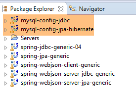
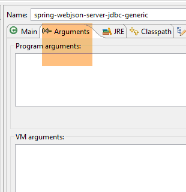
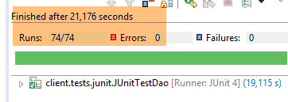
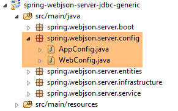
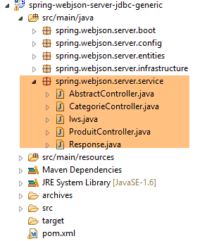
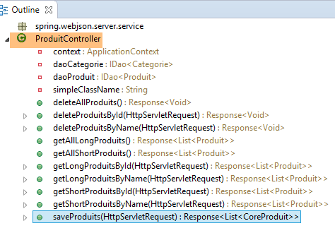
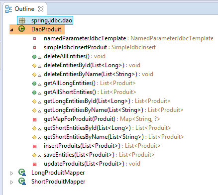
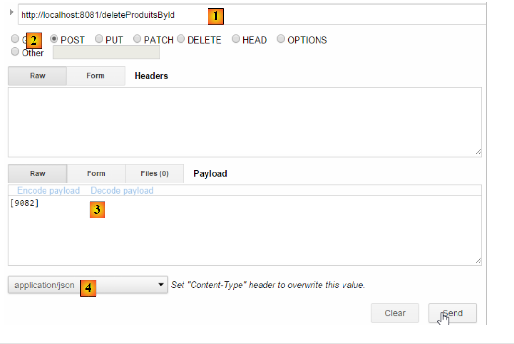
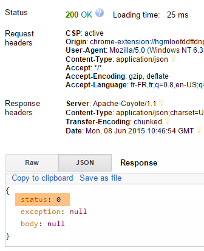
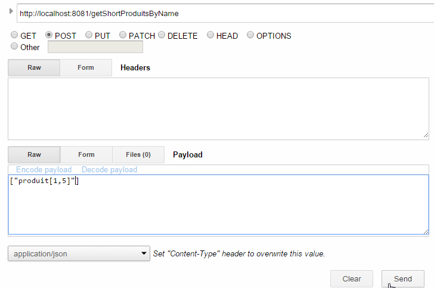

17. Eine Datenbank im Web bereitstellen
17.1. Architektur des Webdienstes / jSON
Wir werden die folgende Architektur einrichten:
 |
- in [1], die Schichten [DAO, [JPA], JDBC] werden durch eine der 24 Konfigurationen implementiert, die in den vorangegangenen Kapiteln und insbesondere in Abschnitt 15 vorgestellt wurden;
- die Schicht [DAO] [3] des Remote-Clients implementiert dieselbe Schnittstelle wie die Schicht [DAO] [1], wodurch wir dieselbe Testschicht wie in den vorangegangenen Kapiteln verwenden können. Es ist so, als wären die Schichten [2-3] für die Schicht [4] transparent;
Wir stützen uns auf die folgenden Projekte:
- das Projekt [sgbd-config-jdbc], das die Ebene JDBC eines der sechs SGBD konfiguriert;
- das Projekt [sgbd-config-jpa-*], das die Schicht JPA des ausgewählten SGBD für eine der drei untersuchten Implementierungen JPA konfiguriert (Hibernate, EclipseLink, OpenJpa);
- das generische Projekt [spring-jdbc-04], das die Schicht [DAO] [1] implementiert;
- das generische Projekt [spring-jpa-generic], das die Schicht [DAO] und [2] implementiert;
- das generische Projekt [spring-webjson-server-jdbc-generic], das einen Webdienst implementiert, der auf dem Projekt [spring-jdbc-04] basiert;
- das generische Projekt [spring-webjson-server-jpa-generic], das einen Webdienst implementiert, der auf dem Projekt [spring-jpa-generic] basiert;
- den generischen Client [spring-webjson-client-generic], der als einziger Client für die 24 Konfigurationen des Webdienstes dienen wird;
17.2. Einrichtung der Arbeitsumgebung
Wir werden mit den folgenden Elementen arbeiten:
- SGBD MySQL 5.6.25;
- Hibernate-Implementierung JPA;
Importieren Sie die folgenden Projekte in STS:
 |
- Die Projekte [spring-webjson-*] befinden sich im Ordner [<exemples>\spring-database-generic\spring-webjson];
- Führen Sie [Alt-F5] aus und generieren Sie anschließend alle oben genannten Projekte neu;
Um die korrekte Installation der Arbeitsumgebung zu überprüfen, gehen Sie wie folgt vor:
- Starten Sie den Webdienst mit der Ausführungskonfiguration [spring-webjson-server-jpa-generic-hibernate], die auf einer Implementierung von JPA / Hibernate basiert;
 |  |
Anschließend:
- Starten Sie den Client dieses Web-Service mit der Ausführungskonfiguration [spring-webjson-client-generic], bei der es sich um einen Test von JUnit handelt:
 |  |
Der Test muss erfolgreich sein:
 |
- In [1]: Beenden Sie den Web-Service und starten Sie ihn anschließend mit der Ausführungskonfiguration [spring-webjson-server-jdbc-generic], die auf einer Implementierung JDBC basiert:
 |  |
Starten Sie anschließend den Client dieses Web-Service mit der Ausführungskonfiguration [spring-webjson-client-generic]:
| |
Der Test sollte erfolgreich sein:
 |
17.3. Implementierung des Web-Service / jSON / JDBC
Zunächst betrachten wir die folgende Architektur:
 |
wobei die Schicht [DAO] [1] direkt mit der Schicht JDBC des SGBD kommuniziert.
17.3.1. Das Eclipse-Projekt des Webdienstes
Das Eclipse-Projekt des Webdienstes / jSON / JDBC lautet wie folgt:
 |
Es handelt sich um ein Maven-Projekt, dessen Datei [pom.xml] wie folgt lautet:
<project xmlns="http://maven.apache.org/POM/4.0.0" xmlns:xsi="http://www.w3.org/2001/XMLSchema-instance"
xsi:schemaLocation="http://maven.apache.org/POM/4.0.0 http://maven.apache.org/xsd/maven-4.0.0.xsd">
<modelVersion>4.0.0</modelVersion>
<groupId>dvp.spring.database</groupId>
<artifactId>spring-webjson-server-jdbc-generic</artifactId>
<version>0.0.1-SNAPSHOT</version>
<name>spring-webjson-server-jdbc-generic</name>
<description>démo spring mvc</description>
<parent>
<groupId>org.springframework.boot</groupId>
<artifactId>spring-boot-starter-parent</artifactId>
<version>1.2.3.RELEASE</version>
</parent>
<dependencies>
<!-- Web-Ebene -->
<dependency>
<groupId>org.springframework.boot</groupId>
<artifactId>spring-boot-starter-web</artifactId>
</dependency>
<!-- Schicht [DAO] -->
<dependency>
<groupId>dvp.spring.database</groupId>
<artifactId>spring-jdbc-generic-04</artifactId>
<version>0.0.1-SNAPSHOT</version>
</dependency>
</dependencies>
<!-- Plugins -->
<build>
<plugins>
<plugin>
<groupId>org.apache.maven.plugins</groupId>
<artifactId>maven-surefire-plugin</artifactId>
<version>2.18.1</version>
</plugin>
</plugins>
</build>
</project>
- Zeilen 11–15: das übergeordnete Maven-Projekt;
- Zeilen 24–28: die Abhängigkeit von der Schicht „[DAO / JDBC]“, die durch das Projekt „[spring-jdbc-generic-04]“ implementiert wird;
- Zeilen 19–22: die Abhängigkeit vom Artefakt [spring-boot-starter-web]. Dieses Artefakt enthält alle Abhängigkeiten, die für die Erstellung eines Webdienstes / jSON erforderlich sind. Es enthält jedoch auch unnötige Bibliotheken. Eine präzisere Konfiguration wäre daher erforderlich, doch diese Konfiguration ist für den Einstieg praktisch.
Die durch diese Konfiguration mitgebrachten Abhängigkeiten sind folgende:
 |  | 1  |
- In [1] ist zu sehen, dass Eclipse die Abhängigkeit vom Projektarchiv [spring-jdbc-generic-04] erkannt hat;
Die oben genannten Abhängigkeiten gelten sowohl für die Ebene [DAO] als auch für die Ebene [web].
17.3.2. Konfiguration der Schicht [web]
Die Schicht [web] wird durch zwei Spring-Konfigurationsdateien konfiguriert:
 |
17.3.2.1. Die Klasse [WebConfig]
Die Klasse [WebConfig] hat vor allem die Aufgabe, Folgendes zu konfigurieren:
- den Tomcat-Server, auf dem der Webdienst bereitgestellt wird;
- die Filter jSON zur Serialisierung/Deserialisierung der Objekte [Produit] und [Categorie]:
package spring.webjson.server.config;
import java.util.List;
import org.springframework.beans.factory.annotation.Autowired;
import org.springframework.beans.factory.config.ConfigurableBeanFactory;
import org.springframework.boot.context.embedded.EmbeddedServletContainerFactory;
import org.springframework.boot.context.embedded.ServletRegistrationBean;
import org.springframework.boot.context.embedded.tomcat.TomcatEmbeddedServletContainerFactory;
import org.springframework.context.ApplicationContext;
import org.springframework.context.annotation.Bean;
import org.springframework.context.annotation.Configuration;
import org.springframework.context.annotation.Scope;
import org.springframework.http.converter.HttpMessageConverter;
import org.springframework.http.converter.json.MappingJackson2HttpMessageConverter;
import org.springframework.web.context.WebApplicationContext;
import org.springframework.web.servlet.DispatcherServlet;
import org.springframework.web.servlet.config.annotation.EnableWebMvc;
import org.springframework.web.servlet.config.annotation.WebMvcConfigurerAdapter;
import com.fasterxml.jackson.databind.ObjectMapper;
import com.fasterxml.jackson.databind.ser.impl.SimpleBeanPropertyFilter;
import com.fasterxml.jackson.databind.ser.impl.SimpleFilterProvider;
@Configuration
@EnableWebMvc
public class WebConfig extends WebMvcConfigurerAdapter {
// -------------------------------- Konfiguration der Ebene [web]
@Autowired
private ApplicationContext context;
@Bean
public DispatcherServlet dispatcherServlet() {
DispatcherServlet servlet=new DispatcherServlet((WebApplicationContext) context);
return servlet;
}
@Bean
public ServletRegistrationBean servletRegistrationBean(DispatcherServlet dispatcherServlet) {
return new ServletRegistrationBean(dispatcherServlet, "/*");
}
@Bean
public EmbeddedServletContainerFactory embeddedServletContainerFactory() {
return new TomcatEmbeddedServletContainerFactory("", 8081);
}
// -------------------------------- Filterkonfiguration [json]
...
}
- Zeile 25: Die Klasse ist eine Spring-Konfigurationsklasse;
- Zeile 26: Die Annotation [@EnableWebMvc] gibt an, dass die Webschicht mit Spring MVC implementiert ist. Dies führt zu impliziten Konfigurationen, die wir nicht manuell vornehmen müssen;
- Zeilen 30–31: Einbindung des Spring-Kontexts der Anwendung;
- Zeilen 33–37: Definition des Beans [dispatcherServlet], der in den Spring-Anwendungen MVC die Rolle von [FrontController] übernimmt, dessen Aufgabe es ist, die Anfragen der Clients an den Controller weiterzuleiten, der sie bearbeiten kann;
- Zeilen 39–42: Das Servlet des Webdienstes wird registriert, ebenso wie die von ihm verarbeiteten URL. Hier wurde [/*] angegeben, was alle URLs bedeutet;
- Zeilen 44–47: Definition der Bean „[embeddedServletContainerFactory]“, die den zu verwendenden Webserver festlegt. Hier handelt es sich um den Tomcat-Webserver „[http://tomcat.apache.org/]“. Man kann auch den Jetty-Server [http://www.eclipse.org/jetty/] verwenden. Beide Server sind in den Maven-Abhängigkeiten integriert. Wenn [Spring Boot] den Start des Projekts steuert, startet es automatisch den in der Konfiguration angegebenen Webserver und stellt den Dienst oder die Webanwendung darauf bereit;
Die Konfiguration der Filter jSON erfolgt wie folgt:
package spring.webjson.server.config;
import java.util.List;
...
@Configuration
@EnableWebMvc
public class WebConfig extends WebMvcConfigurerAdapter {
// -------------------------------- Konfiguration der Ebene [web]
...
// -------------------------------- Filterkonfiguration [json]
// Zuordnung jSON
@Bean
public MappingJackson2HttpMessageConverter mappingJackson2HttpMessageConverter() {
final MappingJackson2HttpMessageConverter converter = new MappingJackson2HttpMessageConverter();
final ObjectMapper objectMapper = new ObjectMapper();
converter.setObjectMapper(objectMapper);
return converter;
}
@Override
public void configureMessageConverters(List<HttpMessageConverter<?>> converters) {
converters.add(mappingJackson2HttpMessageConverter());
super.configureMessageConverters(converters);
}
// Filter jSON
@Bean
public ObjectMapper jsonMapper(MappingJackson2HttpMessageConverter mappingJackson2HttpMessageConverter) {
return mappingJackson2HttpMessageConverter.getObjectMapper();
}
@Bean
@Scope(value = ConfigurableBeanFactory.SCOPE_PROTOTYPE)
ObjectMapper jsonMapperShortCategorie(MappingJackson2HttpMessageConverter mappingJackson2HttpMessageConverter) {
ObjectMapper jsonMapper = jsonMapper(mappingJackson2HttpMessageConverter);
jsonMapper.setFilters(new SimpleFilterProvider().addFilter("jsonFilterCategorie",
SimpleBeanPropertyFilter.serializeAllExcept("produits")));
return jsonMapper;
}
@Bean
@Scope(value = ConfigurableBeanFactory.SCOPE_PROTOTYPE)
ObjectMapper jsonMapperLongCategorie(MappingJackson2HttpMessageConverter mappingJackson2HttpMessageConverter) {
ObjectMapper jsonMapper = jsonMapper(mappingJackson2HttpMessageConverter);
jsonMapper.setFilters(new SimpleFilterProvider().addFilter("jsonFilterCategorie",
SimpleBeanPropertyFilter.serializeAllExcept()).addFilter("jsonFilterProduit",
SimpleBeanPropertyFilter.serializeAllExcept("categorie")));
return jsonMapper;
}
@Bean
@Scope(value = ConfigurableBeanFactory.SCOPE_PROTOTYPE)
ObjectMapper jsonMapperShortProduit(MappingJackson2HttpMessageConverter mappingJackson2HttpMessageConverter) {
ObjectMapper jsonMapper = jsonMapper(mappingJackson2HttpMessageConverter);
jsonMapper.setFilters(new SimpleFilterProvider().addFilter("jsonFilterProduit",
SimpleBeanPropertyFilter.serializeAllExcept("categorie")));
return jsonMapper;
}
@Bean
@Scope(value = ConfigurableBeanFactory.SCOPE_PROTOTYPE)
ObjectMapper jsonMapperLongProduit(MappingJackson2HttpMessageConverter mappingJackson2HttpMessageConverter) {
ObjectMapper jsonMapper = jsonMapper(mappingJackson2HttpMessageConverter);
jsonMapper.setFilters(new SimpleFilterProvider().addFilter("jsonFilterProduit",
SimpleBeanPropertyFilter.serializeAllExcept()).addFilter("jsonFilterCategorie",
SimpleBeanPropertyFilter.serializeAllExcept("produits")));
return jsonMapper;
}
}
- Zeile 8: Die Klasse [WebConfig] erweitert die Klasse [WebMvcConfigurerAdapter]. Letztere konfiguriert die Webanwendung mit Standardwerten. Wenn man diese Konfiguration anpassen möchte, muss man bestimmte Methoden dieser Klasse neu definieren. Hier möchten wir die Methode [configureMessageConverters] der Klasse [22-26] neu definieren (beachten Sie die Annotation @Override), die eine Liste von „Konvertern“ definiert. Der Webdienst /jSON und sein Client tauschen Textzeilen aus. Ein Konverter ist ein Werkzeug, das in der Lage ist, aus einer empfangenen Textzeile ein Objekt zu erstellen (Deserialisierung) und aus einem Objekt eine Textzeile zu erstellen (Serialisierung). In diesem Fall handelt es sich bei den Textzeilen um Zeichenfolgen jSON. Man spricht daher von jSON-Serialisierung/Deserialisierung;
- Zeile 23: Die Methode [configureMessageConverters] erhält als Parameter eine Liste von Konvertern;
- Zeilen 24–25: Der Konverter jSON [MappingJackson2HttpMessageConverter] aus den Zeilen [14-20] wird dieser Liste hinzugefügt. Dies ermöglicht den Austausch jSON zwischen Client und Server;
- Zeilen [14-20]: Definieren einen Konverter jSON, der durch die Klasse [MappingJackson2HttpMessageConverter] implementiert wird. Diese Klasse (Zeile 10) ist in den Maven-Abhängigkeiten des Projekts zu finden;
- Zeilen [17-18]: Ein Mapper jSON wird erstellt und dem Konverter [MappingJackson2HttpMessageConverter] zugewiesen;
- Zeilen [29-32]: Definieren den in Zeile 17 erstellten Mapper jSON als Spring-Bean. Dadurch wird er in den Spring-Kontext aufgenommen und steht zur Injektion in andere Beans oder zur Verwendung im Code der Webanwendung zur Verfügung;
- Zeilen 34–41: Definieren einen Filter jSON für den zuvor definierten Mapper jSON;
- Zeile 35: Die Annotation [@Scope(value = ConfigurableBeanFactory.SCOPE_PROTOTYPE)] sorgt dafür, dass die hier definierte Bean kein Singleton ist. Jedes Mal, wenn sie vom Kontext angefordert wird, wird die Methode [jsonMapperCategorieWithoutProduits] erneut ausgeführt. Dies ist hier erforderlich, da wir vier Filter jSON definieren. Zu einem bestimmten Zeitpunkt darf jedoch nur einer aktiv sein. Indem wir der Bean den Geltungsbereich [ConfigurableBeanFactory.SCOPE_PROTOTYPE] zuweisen, stellen wir sicher, dass die Methode erneut ausgeführt wird und der vorherige Filter durch den neuen ersetzt wird;
- Um diese Filter zu verstehen, muss man sich vor Augen halten, dass in der Schicht [DAO]:
- die Entität [Produit] mit der Annotation [jsonFilterProduit] versehen wurde;
- die Entität [Categorie] wurde mit der Annotation [jsonFilterCategorie] versehen;
Es müssen daher Filter mit diesen Namen definiert werden.
- Zeilen [34-41]: Definieren einen Filter namens [jsonMapperShortCategorie], der es ermöglicht, die Darstellung jSON einer Kategorie ohne deren Produkte zu erhalten;
- Zeilen [43-51]: Definieren einen Filter namens [jsonMapperLongCategorie], mit dem die Darstellung jSON einer Kategorie mit ihren Produkten abgerufen werden kann;
- Zeilen [53-60]: definieren einen Filter namens [jsonMapperShortProduit], mit dem die Darstellung jSON eines Produkts ohne seine Kategorie abgerufen werden kann;
- Zeilen [62-70]: definieren einen Filter namens [jsonMapperLongProduit], der die Darstellung jSON eines Produkts mit seiner Kategorie ermöglicht;
17.3.2.2. Die Klasse [AppConfig]
Die Klasse [AppConfig] konfiguriert die gesamte Anwendung, d. h. die Schichten [web] und [DAO]:
package spring.webjson.server.config;
import org.springframework.context.annotation.ComponentScan;
import org.springframework.context.annotation.Configuration;
import org.springframework.context.annotation.Import;
@Configuration
@ComponentScan(basePackages = { "spring.webjson.server.service" })
@Import({ spring.jdbc.config.AppConfig.class, WebConfig.class })
public class AppConfig {
}
- Zeile 7: Die Klasse ist eine Spring-Konfigurationsklasse;
- Zeile 9: Es werden die Beans der Schicht [DAO / JDBC] sowie die von der Klasse [WebConfig] definierten Beans importiert. Alle Beans der Schicht [DAO] stehen somit in der Webanwendung / jSON zur Verfügung;
- Zeile 8: Gibt an, in welchen Paketen weitere Spring-Beans zu finden sind;
17.3.3. Die Ausnahme [ServerException]
 |
Genau wie in den vorangegangenen Kapiteln löste die Schicht [DAO] eine unkontrollierte Ausnahme [DaoException] aus; die Schicht [web] löst eine unkontrollierte Ausnahme [ServerException] aus:
package spring.webjson.server.infrastructure;
import generic.jdbc.infrastructure.UncheckedException;
public class ServerException extends UncheckedException {
private static final long serialVersionUID = 1L;
// Hersteller
public ServerException() {
super();
}
public ServerException(int code, Throwable e, String simpleClassName) {
super(code, e, simpleClassName);
}
}
- Zeile 5: Die Klasse [ServerException] erweitert die Klasse [UncheckedException], die in dem Projekt definiert ist, das die Schicht JDBC (Zeile 3) konfiguriert;
17.3.4. Die Controller
 |
 |
Hier gibt es zwei Controller:
- [CategorieController] steuert die Abfragen zu den Kategorien;
- [CategorieController] verarbeitet die Anfragen zu den Produkten;
Die von den Controllern bereitgestellten Methoden URL entsprechen eins zu eins den Methoden der Schnittstellen [DaoCategorie] und [DaoProduit] der Schicht [DAO]:
 |  |
Wie oben beschrieben:
- ruft die Web-Methode [deleteAllCategories] die Methode [deleteAllEntities] der Klasse [DaoCategorie] auf;
- die Web-Methode [getShortCategoriesById] ruft die Methode [getShortEntitiesById] der Klasse [DaoCategorie] auf;
Das Gleiche gilt für die Produkte:
 |  |
17.3.4.1. Die von der Steuerung [CategorieController] bereitgestellten URL
| |
| |
| |
| |
| |
| |
| |
| |
| |
| |
17.3.4.2. Die vom Controller [ProduitController] bereitgestellten URL
| |
| |
| |
| |
| |
| |
| |
| |
| |
| |
17.3.5. Generische Implementierung des Webdienstes
 |
Die vom Webdienst bereitgestellte Liste der URL zeigt, dass dieselben Arten von URL zur Verwaltung von Kategorien und Produkten angeboten werden. Anstatt zwei sehr ähnliche Controller zu schreiben, lassen wir sie von einer Klasse ableiten, die alle beiden Controllern gemeinsamen Aufgaben übernimmt. Dies wird die oben genannte Klasse [AbstractController] sein. Diese Klasse wird die folgende Schnittstelle [Iws] implementieren:
package spring.webjson.server.service;
import java.util.List;
import javax.servlet.http.HttpServletRequest;
import spring.jdbc.entities.AbstractCoreEntity;
public interface Iws<T extends AbstractCoreEntity> {
// Liste aller T-Objekte
public Response<List<T>> getAllShortEntities();
public Response<List<T>> getAllLongEntities();
// besonderer Entitäten – Kurzfassung
public Response<List<T>> getShortEntitiesById(HttpServletRequest request);
public Response<List<T>> getShortEntitiesByName(HttpServletRequest request);
// bestimmter Entitäten – Langfassung
public Response<List<T>> getLongEntitiesById(HttpServletRequest request);
public Response<List<T>> getLongEntitiesByName(HttpServletRequest request);
// Aktualisierung mehrerer Entitäten
public Response<List<T>> saveEntities(HttpServletRequest request);
// Löschen aller Entitäten
public Response<Void> deleteAllEntities();
// Löschen mehrerer Entitäten
public Response<Void> deleteEntitiesById(HttpServletRequest request);
public Response<Void> deleteEntitiesByName(HttpServletRequest request);
}
Diese Schnittstelle übernimmt die Methoden der Schnittstelle der Ebene [DAO], die genutzt werden soll:
package spring.jdbc.dao;
import java.util.List;
import spring.jdbc.entities.AbstractCoreEntity;
public interface IDao<T extends AbstractCoreEntity> {
// Liste aller T-Elemente
public List<T> getAllShortEntities();
public List<T> getAllLongEntities();
// bestimmter Entitäten – Kurzversion
public List<T> getShortEntitiesById(Iterable<Long> ids);
public List<T> getShortEntitiesById(Long... ids);
public List<T> getShortEntitiesByName(Iterable<String> names);
public List<T> getShortEntitiesByName(String... names);
// bestimmter Entitäten – Langfassung
public List<T> getLongEntitiesById(Iterable<Long> ids);
public List<T> getLongEntitiesById(Long... ids);
public List<T> getLongEntitiesByName(Iterable<String> names);
public List<T> getLongEntitiesByName(String... names);
// Aktualisierung mehrerer Entitäten
public List<T> saveEntities(Iterable<T> entities);
public List<T> saveEntities(@SuppressWarnings("unchecked") T... entities);
// Löschen aller Entitäten
public void deleteAllEntities();
// Löschen mehrerer Entitäten
public void deleteEntitiesById(Iterable<Long> ids);
public void deleteEntitiesById(Long... ids);
public void deleteEntitiesByName(Iterable<String> names);
public void deleteEntitiesByName(String... names);
public void deleteEntitiesByEntity(Iterable<T> entities);
public void deleteEntitiesByEntity(@SuppressWarnings("unchecked") T... entities);
}
Der Übergang von der Schnittstelle [IDao<T>] der Schicht [DAO] zur Schnittstelle [Iws<T>] des Webdienstes erfolgte nach folgenden Regeln:
- Die Methoden der Schnittstelle [Iws<T>] lösen keine Ausnahme aus. Sollte dennoch eine Ausnahme auftreten, wird diese im Objekt [Response] gekapselt;
- Parametervarianten wie in den Zeilen 45 und 47 ([Iterable<String> names, String... names]) werden entfernt. Die Methoden beziehen ihre Parameter aus der Abfrage HTTP des Clients vom Typ [HttpServletRequest request];
Alle Antworten des Webdienstes werden in das folgende Objekt [Response] gekapselt:
 |
package spring.webjson.server.service;
public class Response<T> {
// ----------------- Eigenschaften
// Status der Operation
private int status;
// eine Fehlermeldung
private String exception;
// der Antworttext
private T body;
// Konstruktoren
public Response() {
}
public Response(int status, String exception, T body) {
this.status = status;
this.exception = exception;
this.body = body;
}
// Getter und Setter
...
}
- Zeile 4: Die Antwort kapselt einen Typ T;
- Zeile 12: Die Antwort vom Typ T;
- Zeilen 7–10: Es ist möglich, dass eine Methode auf eine Ausnahme stößt. In diesem Fall gibt sie eine Antwort mit folgenden Merkmalen zurück:
- Zeile 8: status!=0;
- Zeile 10: eine Fehlermeldung;
Die Klasse [AbstractController] sieht wie folgt aus:
package spring.webjson.server.service;
import java.util.List;
import javax.annotation.PostConstruct;
import javax.servlet.http.HttpServletRequest;
import org.springframework.beans.factory.annotation.Autowired;
import org.springframework.context.ApplicationContext;
import spring.jdbc.dao.IDao;
import spring.jdbc.entities.AbstractCoreEntity;
import spring.jdbc.infrastructure.DaoException;
import spring.webjson.server.infrastructure.ServerException;
import com.fasterxml.jackson.core.type.TypeReference;
import com.fasterxml.jackson.databind.ObjectMapper;
import com.google.common.io.CharStreams;
public abstract class AbstractController<T extends AbstractCoreEntity> implements Iws<T> {
@Autowired
protected ApplicationContext context;
// Schicht DAO
private IDao<T> dao;
abstract protected IDao<T> getDao();
// lokal
private String simpleClassName = getClass().getSimpleName();
@PostConstruct
public void init(){
dao=getDao();
}
@Override
public Response<List<T>> getAllShortEntities() {
try {
// Antwort
return new Response<List<T>>(0, null, dao.getAllShortEntities());
} catch (DaoException e) {
return new Response<List<T>>(1, e.toString(), null);
} catch (Exception e) {
return new Response<List<T>>(2, new ServerException(1007, e, simpleClassName).toString(), null);
}
}
@Override
public Response<List<T>> getAllLongEntities() {
try {
// Antwort
return new Response<List<T>>(0, null, dao.getAllLongEntities());
} catch (DaoException e) {
return new Response<List<T>>(1, e.toString(), null);
} catch (Exception e) {
return new Response<List<T>>(2, new ServerException(1008, e, simpleClassName).toString(), null);
}
}
@Override
public Response<List<T>> getShortEntitiesById(HttpServletRequest request) {
...
}
@Override
public Response<List<T>> getShortEntitiesByName(HttpServletRequest request) {
...
}
@Override
public Response<List<T>> getLongEntitiesById(HttpServletRequest request) {
...
}
@Override
public Response<List<T>> getLongEntitiesByName(HttpServletRequest request) {
...
}
@Override
public Response<List<T>> saveEntities(HttpServletRequest request) {
return new Response<List<T>>(2, new ServerException(1013, new RuntimeException("[saveEntities] not implemented"), simpleClassName).toString(), null);
}
@Override
public Response<Void> deleteAllEntities() {
try {
// Löschen
dao.deleteAllEntities();
// Antwort
return new Response<Void>(0, null, null);
} catch (DaoException e) {
return new Response<Void>(1, e.toString(), null);
} catch (Exception e) {
return new Response<Void>(2, new ServerException(1014, e, simpleClassName).toString(), null);
}
}
@Override
public Response<Void> deleteEntitiesById(HttpServletRequest request) {
...
}
@Override
public Response<Void> deleteEntitiesByName(HttpServletRequest request) {
...
}
}
Die Methoden sind alle auf die gleiche Weise implementiert:
- Wenn sie Informationen erwarten, beziehen sie diese aus dem Objekt [HttpServletRequest request];
- sie rufen die gleichnamige Methode der Schicht [DAO] auf;
- sie behandeln die Ausnahmen, die entweder bei Vorgang 1 (Abruf der Parameter) oder bei Vorgang 2 (Aufruf der Schicht [DAO]) auftreten können;
Betrachten wir zunächst, wie die Schicht [DAO] in die Klasse [AbstractController] eingebunden wird:
public abstract class AbstractController<T extends AbstractCoreEntity> implements Iws<T> {
@Autowired
protected ApplicationContext context;
// Ebene DAO
private IDao<T> dao;
abstract protected IDao<T> getDao();
@PostConstruct
public void init(){
dao=getDao();
}
- Zeile 1: Die Klasse ist abstrakt und implementiert die generische Schnittstelle [Iws<T>];
- Zeilen 3–4: Einbindung des Spring-Kontexts;
- Zeile 7: die noch unbekannte Referenz der zu verwendenden Schicht [DAO];
- Zeile 9: Die abstrakte Methode [getDao], die die Referenz der zu verwendenden Schicht [DAO] zurückgibt. Diese Methode wird von der Unterklasse neu definiert, und somit gibt die Unterklasse an, welche Schicht [DAO] verwendet werden soll (DaoProduit oder DaoCategorie);
- Zeile 11: Die Annotation [@PostConstruct] kennzeichnet eine Methode, die ausgeführt werden soll, sobald die Instanziierung des Objekts abgeschlossen ist. Wenn diese Instanziierung abgeschlossen ist, sind die Spring-Injektionen erfolgt. Die untergeordnete Klasse hat dann die Referenz auf ihre Schicht [DAO] erhalten und kann diese somit an ihre übergeordnete Klasse weitergeben;
Die Methode [getShortEntitiesById] lautet wie folgt:
@Override
public Response<List<T>> getShortEntitiesById(HttpServletRequest request) {
try {
// der gesendete Wert wird abgerufen
String body = CharStreams.toString(request.getReader());
// deserialisiert
ObjectMapper mapper = context.getBean("jsonMapper", ObjectMapper.class);
List<Long> ids = mapper.readValue(body, new TypeReference<List<Long>>() {
});
// Antwort
return new Response<List<T>>(0, null, dao.getShortEntitiesById(ids));
} catch (DaoException e) {
return new Response<List<T>>(1, e.toString(), null);
} catch (Exception e) {
return new Response<List<T>>(2, new ServerException(1009, e, simpleClassName).toString(), null);
}
}
- Zeile 5: Der vom Client gesendete Wert ist eine Zeichenkette jSON. Hier wird sie abgerufen;
- Zeilen 7–9: Die Zeichenkette jSON enthält die Liste der Primärschlüssel der Entitäten, für die die Kurzform benötigt wird;
- Zeile 11: Die gleichnamige Methode [DAO] wird aufgerufen. Die Antwort vom Typ [List<T>] wird in ein Objekt vom Typ [Response] gekapselt;
- Zeile 13: Fall, in dem die Schicht [DAO] eine Ausnahme ausgelöst hat;
- Zeile 15: Fall anderer Ausnahmen, insbesondere der möglichen Ausnahme bei der Deserialisierung des Parameters jSON, Zeile 8;
Die Methode [getShortEntitiesByName] ist analog:
@Override
public Response<List<T>> getShortEntitiesByName(HttpServletRequest request) {
try {
// Der gesendete Wert wird abgerufen
String body = CharStreams.toString(request.getReader());
// Er wird deserialisiert
ObjectMapper mapper = context.getBean("jsonMapper", ObjectMapper.class);
List<String> noms = mapper.readValue(body, new TypeReference<List<String>>() {
});
// Antwort
return new Response<List<T>>(0, null, dao.getShortEntitiesByName(noms));
} catch (DaoException e) {
return new Response<List<T>>(1, e.toString(), null);
} catch (Exception e) {
return new Response<List<T>>(2, new ServerException(1010, e, simpleClassName).toString(), null);
}
}
- Zeilen 4–9: Hier ist der Parameter jSON die Liste der Namen der Kategorien, für die die Kurzform gewünscht wird;
Die Methode [saveEntities] wurde nicht implementiert, da sie stark von der Art der zu speichernden Entität abhängt, also von [Categorie] oder [Produit]. Es gibt nur wenig Code, der refaktorisiert werden müsste. Diese Aufgabe wird daher den untergeordneten Klassen überlassen.
@Override
public Response<List<T>> saveEntities(HttpServletRequest request) {
return new Response<List<T>>(2, new ServerException(1013, new RuntimeException("[saveEntities] not implemented"), simpleClassName).toString(), null);
}
17.3.6. Der Controller [CategorieController]
 |
Der Controller [CategorieController] verwaltet die Verarbeitung von URL in Bezug auf die folgenden Kategorien:
package spring.webjson.server.service;
import java.util.ArrayList;
import java.util.List;
import javax.servlet.http.HttpServletRequest;
import org.springframework.beans.factory.annotation.Autowired;
import org.springframework.web.bind.annotation.RequestMapping;
import org.springframework.web.bind.annotation.RequestMethod;
import org.springframework.web.bind.annotation.RestController;
import spring.jdbc.dao.IDao;
import spring.jdbc.entities.Categorie;
import spring.jdbc.entities.Produit;
import spring.jdbc.infrastructure.DaoException;
import spring.webjson.server.entities.CoreCategorie;
import spring.webjson.server.entities.CoreProduit;
import spring.webjson.server.infrastructure.ServerException;
import com.fasterxml.jackson.core.type.TypeReference;
import com.fasterxml.jackson.databind.ObjectMapper;
import com.google.common.io.CharStreams;
@RestController
public class CategorieController extends AbstractController<Categorie> {
@Autowired
private IDao<Categorie> daoCategorie;
@Override
protected IDao<Categorie> getDao() {
return daoCategorie;
}
// lokal
private String simpleClassName = getClass().getSimpleName();
@RequestMapping(value = "/getAllShortCategories", method = RequestMethod.GET)
public Response<List<Categorie>> getAllShortCategories() {
// übergeordnet
Response<List<Categorie>> response = super.getAllShortEntities();
// Serialisierungsfilter jSON
context.getBean("jsonMapperShortCategorie", ObjectMapper.class);
// Antwort
return response;
}
@RequestMapping(value = "/getAllLongCategories", method = RequestMethod.GET)
public Response<List<Categorie>> getAllLongCategories() {
// übergeordnet
Response<List<Categorie>> response = super.getAllLongEntities();
// Serialisierungsfilter jSON
context.getBean("jsonMapperLongCategorie", ObjectMapper.class);
// Antwort
return response;
}
@RequestMapping(value = "/getShortCategoriesById", method = RequestMethod.POST)
public Response<List<Categorie>> getShortCategoriesById(HttpServletRequest request) {
// übergeordnet
Response<List<Categorie>> response = super.getShortEntitiesById(request);
// Serialisierungsfilter jSON
context.getBean("jsonMapperShortCategorie", ObjectMapper.class);
// Antwort
return response;
}
@RequestMapping(value = "/getShortCategoriesByName", method = RequestMethod.POST)
public Response<List<Categorie>> getShortCategoriesByName(HttpServletRequest request) {
// übergeordnet
Response<List<Categorie>> response = super.getShortEntitiesByName(request);
// Serialisierungsfilter jSON
context.getBean("jsonMapperShortCategorie", ObjectMapper.class);
// Antwort
return response;
}
@RequestMapping(value = "/getLongCategoriesById", method = RequestMethod.POST)
public Response<List<Categorie>> getLongCategoriesById(HttpServletRequest request) {
// übergeordnet
Response<List<Categorie>> response = super.getLongEntitiesById(request);
// Serialisierungsfilter jSON
context.getBean("jsonMapperLongCategorie", ObjectMapper.class);
// Antwort
return response;
}
@RequestMapping(value = "/getLongCategoriesByName", method = RequestMethod.POST)
public Response<List<Categorie>> getLongCategoriesByName(HttpServletRequest request) {
// übergeordnet
Response<List<Categorie>> response = super.getLongEntitiesByName(request);
// Serialisierungsfilter jSON
context.getBean("jsonMapperLongCategorie", ObjectMapper.class);
// Antwort
return response;
}
@RequestMapping(value = "/saveCategories", method = RequestMethod.POST, consumes = "application/json; charset=UTF-8")
public Response<List<CoreCategorie>> saveCategories(HttpServletRequest request) {
...
}
@RequestMapping(value = "/deleteAllCategories", method = RequestMethod.GET)
public Response<Void> deleteAllCategories() {
return super.deleteAllEntities();
}
@RequestMapping(value = "/deleteCategoriesById", method = RequestMethod.POST, consumes = "application/json; charset=UTF-8")
public Response<Void> deleteCategoriesById(HttpServletRequest request) {
return super.deleteEntitiesById(request);
}
@RequestMapping(value = "/deleteCategoriesByName", method = RequestMethod.POST, consumes = "application/json; charset=UTF-8")
public Response<Void> deleteCategoriesByName(HttpServletRequest request) {
return super.deleteEntitiesByName(request);
}
}
- Zeile 26: Die Klasse [CategorieController] erweitert die Klasse [AbstractController];
- Zeile 25: Die Annotation [@RestController] macht die Klasse zu einer Spring-Komponente. Diese Annotation gibt außerdem an, dass es sich bei der Klasse um einen Webdienst handelt, dessen Methoden ihre Antwort direkt im Format jSON an den Client senden;
- Zeilen 28–29: Die Referenz der Schicht [DAO] wird hier injiziert;
- Zeilen 31–34: Neudefinition der Methode [getDao], die in der übergeordneten Klasse als abstrakt deklariert wurde und deren Zweck darin besteht, eine Referenz auf die zu verwendende Schicht [DAO] zurückzugeben;
Alle Methoden sind nach dem gleichen Muster aufgebaut:
- Delegierung der Verarbeitung an die übergeordnete Klasse;
- Initialisierung des Mapper jSON, der die Serialisierung der Antwort durchführt;
- Senden der Antwort;
Werfen wir einen Blick auf die Signatur einiger URL:
| - URL [/getAllShortCategories] wird mit einem GET aufgerufen |
| – URL [/getShortCategoriesById] wird mit einem POST aufgerufen. Der übermittelte Wert ist die Zeichenfolge jSON der Primärschlüssel der gewünschten Kategorien; |
| – URL [/getLongCategoriesByName] wird mit einem POST aufgerufen. Der übergebene Wert ist die Zeichenkette jSON mit den Namen der gewünschten Kategorien; |
Sehen wir uns nun die Methode [saveCategories] genauer an, die nicht dem Format der anderen Methoden folgt:
@RequestMapping(value = "/saveCategories", method = RequestMethod.POST, consumes = "application/json; charset=UTF-8")
public Response<List<CoreCategorie>> saveCategories(HttpServletRequest request) {
// Kategorien werden gespeichert
try {
// der gesendete Wert wird abgerufen
String body = CharStreams.toString(request.getReader());
// Entserialisierung
ObjectMapper mapper = context.getBean("jsonMapperLongCategorie", ObjectMapper.class);
List<Categorie> categories = mapper.readValue(body, new TypeReference<List<Categorie>>() {
});
// Die Kategorien werden gespeichert
categories = daoCategorie.saveEntities(categories);
// das Ergebnis wird zurückgegeben
List<CoreCategorie> coreCategories = new ArrayList<CoreCategorie>();
for (Categorie categorie : categories) {
CoreCategorie coreCategorie = new CoreCategorie(categorie.getId());
coreCategories.add(coreCategorie);
List<Produit> produits = categorie.getProduits();
if (produits != null) {
List<CoreProduit> coreProduits = new ArrayList<CoreProduit>();
for (Produit produit : categorie.getProduits()) {
coreProduits.add(new CoreProduit(produit.getId()));
}
coreCategorie.setCoreProduits(coreProduits);
}
}
// Ergebnis
return new Response<List<CoreCategorie>>(0, null, coreCategories);
} catch (DaoException e) {
return new Response<List<CoreCategorie>>(1, e.toString(), null);
} catch (Exception e) {
return new Response<List<CoreCategorie>>(2, new ServerException(1020, e, simpleClassName).toString(), null);
}
}
- Zeile 1: Die URL [/saveCategories] wird von einem übermittelten Wert begleitet. Dieser ist die Zeichenkette jSON, die die Langbezeichnungen der zu speichernden Kategorien enthält;
- Zeilen 5–10: Die zu beibehaltenden Kategorien werden anhand der Zeichenfolge „jSON“ neu erstellt. Die Verknüpfung [produit.categorie], die ein [Produit] mit seinem [Catégorie] verbindet, lautet null, da in der Langform eines [Categorie] jedes [Produit] selbst in seiner Kurzform ohne sein Feld [categorie] vorliegt. Dies stellt kein Problem dar, da die mit JDBC implementierte Schicht [DAO] diese Information nicht benötigt;
- Zeile 12: Die Kategorien werden persistent gespeichert. Die empfangene Liste der Kategorien wurde um die Primärschlüssel der persistenten Elemente – Kategorien und Produkte – ergänzt. Ansonsten hat sich nichts geändert. Anstatt die gesamte empfangene Liste zurückzugeben, was mit Aufwand verbunden ist, werden nur die Primärschlüssel der Elemente dieser Liste zurückgegeben. Dazu werden die folgenden Klassen [CoreCategorie] und [CoreProduit] verwendet:
 |
package spring.webjson.server.entities;
import java.util.List;
public class CoreCategorie {
// Primärschlüssel
private Long id;
// Hersteller
public CoreCategorie() {
}
public CoreCategorie(Long id) {
this.id=id;
}
// Produktliste
private List<CoreProduit> coreProduits;
// Getter und Setter
...
}
- Zeile 8: der Primärschlüssel eines Produkts;
- Zeile 20: die Primärschlüssel seiner Produkte;
package spring.webjson.server.entities;
public class CoreProduit {
// Primärschlüssel
private Long id;
// Konstruktoren
public CoreProduit() {
}
public CoreProduit(Long id) {
this.id = id;
}
// Getter und Setter
...
}
- Zeile 6: der Primärschlüssel eines Produkts;
Kehren wir zum Code der Methode [saveCategories] zurück:
...
// Kategorien werden gespeichert
categories = daoCategorie.saveEntities(categories);
// das Ergebnis wird zurückgegeben
List<CoreCategorie> coreCategories = new ArrayList<CoreCategorie>();
for (Categorie categorie : categories) {
CoreCategorie coreCategorie = new CoreCategorie(categorie.getId());
coreCategories.add(coreCategorie);
List<Produit> produits = categorie.getProduits();
if (produits != null) {
List<CoreProduit> coreProduits = new ArrayList<CoreProduit>();
for (Produit produit : categorie.getProduits()) {
coreProduits.add(new CoreProduit(produit.getId()));
}
coreCategorie.setCoreProduits(coreProduits);
}
}
// Ergebnis
return new Response<List<CoreCategorie>>(0, null, coreCategories);
...
- Zeilen 5–17: Es wird die Liste der [CoreCategorie] erstellt, die an den Remote-Client zurückgegeben wird;
- Zeile 19: Die Antwort wird zurückgegeben und in jSON serialisiert;
17.3.7. Verwaltung der Filter jSON
Für jede Methode eines Controllers gibt es zwei Zeitpunkte für die Serialisierung/Deserialisierung jSON:
- die Deserialisierung des gesendeten Werts: Diese wird hier explizit verwaltet;
- die Serialisierung des Ergebnisses: Diese wird hier implizit verwaltet;
Beginnen wir mit der Deserialisierung des übermittelten Werts in [CategorieController.saveCategories]:
@RequestMapping(value = "/saveCategories", method = RequestMethod.POST, consumes = "application/json; charset=UTF-8")
public Response<List<CoreCategorie>> saveCategories(HttpServletRequest request) {
// Kategorien werden gespeichert
try {
// den gesendeten Wert abrufen
String body = CharStreams.toString(request.getReader());
// Entserialisierung
ObjectMapper mapper = context.getBean("jsonMapperLongCategorie", ObjectMapper.class);
List<Categorie> categories = mapper.readValue(body, new TypeReference<List<Categorie>>() {
});
- Zeile 8: Im Spring-Kontext wird ein Mapper abgerufen, der für die Verwaltung des Filters jSON [jsonMapperLongCategorie] konfiguriert ist. Kehren wir zur Definition dieses Mappers in der Konfigurationsklasse [WebConfig] zurück:
// -------------------------------- Filterkonfiguration [json]
// Zuordnung jSON
@Bean
public MappingJackson2HttpMessageConverter mappingJackson2HttpMessageConverter() {
final MappingJackson2HttpMessageConverter converter = new MappingJackson2HttpMessageConverter();
final ObjectMapper objectMapper = new ObjectMapper();
converter.setObjectMapper(objectMapper);
return converter;
}
@Override
public void configureMessageConverters(List<HttpMessageConverter<?>> converters) {
converters.add(mappingJackson2HttpMessageConverter());
super.configureMessageConverters(converters);
}
// Filter jSON
@Bean
public ObjectMapper jsonMapper(MappingJackson2HttpMessageConverter mappingJackson2HttpMessageConverter) {
return mappingJackson2HttpMessageConverter.getObjectMapper();
}
@Bean
@Scope(value = ConfigurableBeanFactory.SCOPE_PROTOTYPE)
ObjectMapper jsonMapperShortCategorie(MappingJackson2HttpMessageConverter mappingJackson2HttpMessageConverter) {
ObjectMapper jsonMapper = jsonMapper(mappingJackson2HttpMessageConverter);
jsonMapper.setFilters(new SimpleFilterProvider().addFilter("jsonFilterCategorie",
SimpleBeanPropertyFilter.serializeAllExcept("produits")));
return jsonMapper;
}
@Bean
@Scope(value = ConfigurableBeanFactory.SCOPE_PROTOTYPE)
ObjectMapper jsonMapperLongCategorie(MappingJackson2HttpMessageConverter mappingJackson2HttpMessageConverter) {
ObjectMapper jsonMapper = jsonMapper(mappingJackson2HttpMessageConverter);
jsonMapper.setFilters(new SimpleFilterProvider().addFilter("jsonFilterCategorie",
SimpleBeanPropertyFilter.serializeAllExcept()).addFilter("jsonFilterProduit",
SimpleBeanPropertyFilter.serializeAllExcept("categorie")));
return jsonMapper;
}
- Zeilen 32–40: Der Mapper jSON [jsonMapperLongCategorie], der von der Klasse [CategorieController] abgerufen wird;
- Zeile 35: Dieser Mapper wird von der Methode [jsonMapper] in den Zeilen 18–21 zurückgegeben;
- Zeilen 18–21: Die Methode [jsonMapper] gibt den Mapper jSON des Konverters [MappingJackson2HttpMessageConverter] aus den Zeilen 3–9 zurück;
Mit anderen Worten: Der Mapper jSON, der durch die folgende Zeile 4 in [CategorieController.saveCategories] abgerufen wird:
// Der gesendete Wert wird abgerufen
String body = CharStreams.toString(request.getReader());
// man deserialisiert ihn
ObjectMapper mapper = context.getBean("jsonMapperLongCategorie", ObjectMapper.class);
List<Categorie> categories = mapper.readValue(body, new TypeReference<List<Categorie>>() {
});
ist der von Spring standardmäßig verwendete Konverter MVC, um den vom Client gesendeten Wert zu deserialisieren und das an ihn gesendete Ergebnis zu serialisieren. In den obigen Zeilen fand keine implizite Deserialisierung des gesendeten Werts statt. Dazu hätte man schreiben müssen:
@RequestMapping(value = "/saveCategories", method = RequestMethod.POST, consumes = "application/json; charset=UTF-8")
public Response<List<CoreCategorie>> saveCategories(@RequestBody List<Categorie> categories) {
In diesem Fall hätte eine automatische Deserialisierung des im Parameter [categories] übermittelten Werts stattgefunden. Es gab jedoch das Problem mit dem Filter [jsonFilterCategorie], über den die Entitäten [Categorie] verfügen. Dieser muss konfiguriert werden. Aus diesem Grund haben wir uns für eine explizite Deserialisierung entschieden (Zeilen 4–5). Der zweite zu beachtende Punkt ist, dass der Mapper in Zeile 4 (der standardmäßig von Spring verwendete Mapper MVC) auch für die Serialisierung des Ergebnisses [Response<List<CoreCategorie>] geeignet ist. Tatsächlich verfügt die Entität [CoreCategorie] über keinen Filter jSON. Es ist daher nicht erforderlich, den erhaltenen Mapper jSON mit einem zusätzlichen Filter zu konfigurieren. In diesem Fall erfolgt eine implizite Serialisierung der an den Client gesendeten Antwort.
17.3.8. Der Controller [ProduitController]
 |
Der Controller [ProduitController] verwaltet die Verarbeitung der URL in Bezug auf die Produkte. Sein Code entspricht dem des Controllers [CategorieController]:
package spring.webjson.server.service;
import java.util.ArrayList;
import java.util.List;
import javax.servlet.http.HttpServletRequest;
import org.springframework.beans.factory.annotation.Autowired;
import org.springframework.web.bind.annotation.RequestMapping;
import org.springframework.web.bind.annotation.RequestMethod;
import org.springframework.web.bind.annotation.RestController;
import spring.jdbc.dao.IDao;
import spring.jdbc.entities.Produit;
import spring.jdbc.infrastructure.DaoException;
import spring.webjson.server.entities.CoreProduit;
import spring.webjson.server.infrastructure.ServerException;
import com.fasterxml.jackson.core.type.TypeReference;
import com.fasterxml.jackson.databind.ObjectMapper;
import com.google.common.io.CharStreams;
@RestController
public class ProduitController extends AbstractController<Produit> {
@Autowired
private IDao<Produit> daoProduit;
@Override
protected IDao<Produit> getDao() {
return daoProduit;
}
// lokal
private String simpleClassName = getClass().getSimpleName();
@RequestMapping(value = "/getAllShortProduits", method = RequestMethod.GET)
public Response<List<Produit>> getAllShortProduits() {
// übergeordnet
Response<List<Produit>> response = super.getAllShortEntities();
// Serialisierungsfilter jSON
context.getBean("jsonMapperShortProduit", ObjectMapper.class);
// Antwort
return response;
}
@RequestMapping(value = "/getAllLongProduits", method = RequestMethod.GET)
public Response<List<Produit>> getAllLongProduits() {
// übergeordnet
Response<List<Produit>> response = super.getAllLongEntities();
// Serialisierungsfilter jSON
context.getBean("jsonMapperLongProduit", ObjectMapper.class);
// Antwort
return response;
}
@RequestMapping(value = "/getShortProduitsById", method = RequestMethod.POST, consumes = "application/json; charset=UTF-8")
public Response<List<Produit>> getShortProduitsById(HttpServletRequest request) {
// übergeordnet
Response<List<Produit>> response = super.getShortEntitiesById(request);
// Serialisierungsfilter jSON
context.getBean("jsonMapperShortProduit", ObjectMapper.class);
// Antwort
return response;
}
@RequestMapping(value = "/getShortProduitsByName", method = RequestMethod.POST, consumes = "application/json; charset=UTF-8")
public Response<List<Produit>> getShortProduitsByName(HttpServletRequest request) {
// übergeordnet
Response<List<Produit>> response = super.getShortEntitiesByName(request);
// Serialisierungsfilter jSON
context.getBean("jsonMapperShortProduit", ObjectMapper.class);
// Antwort
return response;
}
@RequestMapping(value = "/getLongProduitsById", method = RequestMethod.POST, consumes = "application/json; charset=UTF-8")
public Response<List<Produit>> getLongProduitsById(HttpServletRequest request) {
// übergeordnet
Response<List<Produit>> response = super.getLongEntitiesById(request);
// Serialisierungsfilter jSON
context.getBean("jsonMapperLongProduit", ObjectMapper.class);
// Antwort
return response;
}
@RequestMapping(value = "/getLongProduitsByName", method = RequestMethod.POST, consumes = "application/json; charset=UTF-8")
public Response<List<Produit>> getLongProduitsByName(HttpServletRequest request) {
// übergeordnet
Response<List<Produit>> response = super.getLongEntitiesByName(request);
// Serialisierungsfilter jSON
context.getBean("jsonMapperLongProduit", ObjectMapper.class);
// Antwort
return response;
}
@RequestMapping(value = "/saveProduits", method = RequestMethod.POST, consumes = "application/json; charset=UTF-8")
public Response<List<CoreProduit>> saveProduits(HttpServletRequest request) {
...
}
@RequestMapping(value = "/deleteAllProduits", method = RequestMethod.GET)
public Response<Void> deleteAllProduits() {
return super.deleteAllEntities();
}
@RequestMapping(value = "/deleteProduitsById", method = RequestMethod.POST, consumes = "application/json; charset=UTF-8")
public Response<Void> deleteProduitsById(HttpServletRequest request) {
return super.deleteEntitiesById(request);
}
@RequestMapping(value = "/deleteProduitsByName", method = RequestMethod.POST, consumes = "application/json; charset=UTF-8")
public Response<Void> deleteProduitsByName(HttpServletRequest request) {
return super.deleteEntitiesByName(request);
}
}
Lediglich die Methode [saveProduits] weist eine von den anderen Methoden abweichende Struktur auf:
@RequestMapping(value = "/saveProduits", method = RequestMethod.POST, consumes = "application/json; charset=UTF-8")
public Response<List<CoreProduit>> saveProduits(HttpServletRequest request) {
try {
// der gesendete Wert wird abgerufen
String body = CharStreams.toString(request.getReader());
// man deserialisiert ihn
ObjectMapper mapper = context.getBean("jsonMapperShortProduit", ObjectMapper.class);
List<Produit> produits = mapper.readValue(body, new TypeReference<List<Produit>>() {
});
// die Produkte werden gespeichert
produits = daoProduit.saveEntities(produits);
List<CoreProduit> coreProduits = new ArrayList<CoreProduit>();
for (Produit produit : produits) {
coreProduits.add(new CoreProduit(produit.getId()));
}
// die Antwort wird zurückgegeben
return new Response<List<CoreProduit>>(0, null, coreProduits);
} catch (DaoException e) {
return new Response<List<CoreProduit>>(1, e.toString(), null);
} catch (Exception e) {
return new Response<List<CoreProduit>>(2, new ServerException(1021, e, simpleClassName).toString(), null);
}
}
- Zeilen 4–9: Ausgehend von der empfangenen Zeichenfolge jSON wird die Liste der zu speichernden [Produit] rekonstruiert. Da die empfangene Zeichenfolge jSON die der Kurzversionen der Produkte ist, hat das Feld [categorie] dieser Produkte den Wert null. Auch hier benötigt die Ebene DAO / JDBC diese Information nicht;
- Zeile 11: Die Produkte werden gespeichert;
- Zeilen 12–15: Die Liste der zurückzugebenden [CoreProduit] wird erstellt;
- Zeile 18: Die Antwort wird zurückgegeben, die vom Mapper in Zeile 7 serialisiert wird (implizite Serialisierung durch Spring MVC), bevor sie an den Remote-Client gesendet wird (siehe Erläuterungen in Abschnitt 17.3.7);
17.3.9. Die Ausführungsklasse des Webdienstes / jSON
 |
Die Klasse [Boot] ist die ausführbare Klasse des Projekts:
package spring.webjson.server.boot;
import org.springframework.boot.SpringApplication;
import spring.webjson.server.config.AppConfig;
public class Boot {
public static void main(String[] args) {
SpringApplication.run(AppConfig.class, args);
}
}
- Zeile 10: Die statische Methode [SpringApplication.run] wird ausgeführt. Die Klasse [SpringApplication] ist eine Klasse des Projekts [spring Boot] (Zeile 3). Ihr werden zwei Parameter übergeben:
- [AppConfig.class]: die Klasse, die die gesamte Anwendung konfiguriert;
- [args]: eventuelle Argumente, die an die Methode [main] in Zeile 9 übergeben wurden. Dieser Parameter wird hier nicht verwendet;
Wenn man diese Klasse ausführt, erhält man die folgenden Protokolle:
. ____ _ __ _ _
/\\ / ___'_ __ _ _(_)_ __ __ _ \ \ \ \
( ( )\___ | '_ | '_| | '_ \/ _` | \ \ \ \
\\/ ___)| |_)| | | | | || (_| | ) ) ) )
' |____| .__|_| |_|_| |_\__, | / / / /
=========|_|==============|___/=/_/_/_/
:: Spring Boot :: (v1.2.3.RELEASE)
11:34:08.661 [main] INFO spring.webjson.server.boot.Boot - Starting Boot on Gportpers3 with PID 6796 (started by ST in D:\data\istia-1415\spring data\dvp\dvp-spring-database-05\spring-database-generic\spring-webjson\spring-webjson-server-jdbc-generic)
11:34:08.700 [main] INFO o.s.b.c.e.AnnotationConfigEmbeddedWebApplicationContext - Refreshing org.springframework.boot.context.embedded.AnnotationConfigEmbeddedWebApplicationContext@2df32bf7: startup date [Mon Jun 08 11:34:08 CEST 2015]; root of context hierarchy
11:34:08.916 [main] INFO o.s.b.f.s.DefaultListableBeanFactory - Overriding bean definition for bean 'jsonMapper': replacing [Root bean: class [null]; scope=; abstract=false; lazyInit=false; autowireMode=3; dependencyCheck=0; autowireCandidate=true; primary=false; factoryBeanName=generic.jdbc.config.ConfigJdbc; factoryMethodName=jsonMapper; initMethodName=null; destroyMethodName=(inferred); defined in class generic.jdbc.config.ConfigJdbc] with [Root bean: class [null]; scope=; abstract=false; lazyInit=false; autowireMode=3; dependencyCheck=0; autowireCandidate=true; primary=false; factoryBeanName=spring.webjson.server.config.WebConfig; factoryMethodName=jsonMapper; initMethodName=null; destroyMethodName=(inferred); defined in class spring.webjson.server.config.WebConfig]
11:34:08.917 [main] INFO o.s.b.f.s.DefaultListableBeanFactory - Overriding bean definition for bean 'jsonMapperLongCategorie': replacing [Root bean: class [null]; scope=prototype; abstract=false; lazyInit=false; autowireMode=3; dependencyCheck=0; autowireCandidate=true; primary=false; factoryBeanName=generic.jdbc.config.ConfigJdbc; factoryMethodName=jsonMapperLongCategorie; initMethodName=null; destroyMethodName=(inferred); defined in class generic.jdbc.config.ConfigJdbc] with [Root bean: class [null]; scope=prototype; abstract=false; lazyInit=false; autowireMode=3; dependencyCheck=0; autowireCandidate=true; primary=false; factoryBeanName=spring.webjson.server.config.WebConfig; factoryMethodName=jsonMapperLongCategorie; initMethodName=null; destroyMethodName=(inferred); defined in class spring.webjson.server.config.WebConfig]
11:34:08.918 [main] INFO o.s.b.f.s.DefaultListableBeanFactory - Overriding bean definition for bean 'jsonMapperShortProduit': replacing [Root bean: class [null]; scope=prototype; abstract=false; lazyInit=false; autowireMode=3; dependencyCheck=0; autowireCandidate=true; primary=false; factoryBeanName=generic.jdbc.config.ConfigJdbc; factoryMethodName=jsonMapperShortProduit; initMethodName=null; destroyMethodName=(inferred); defined in class generic.jdbc.config.ConfigJdbc] with [Root bean: class [null]; scope=prototype; abstract=false; lazyInit=false; autowireMode=3; dependencyCheck=0; autowireCandidate=true; primary=false; factoryBeanName=spring.webjson.server.config.WebConfig; factoryMethodName=jsonMapperShortProduit; initMethodName=null; destroyMethodName=(inferred); defined in class spring.webjson.server.config.WebConfig]
11:34:08.919 [main] INFO o.s.b.f.s.DefaultListableBeanFactory - Overriding bean definition for bean 'jsonMapperShortCategorie': replacing [Root bean: class [null]; scope=prototype; abstract=false; lazyInit=false; autowireMode=3; dependencyCheck=0; autowireCandidate=true; primary=false; factoryBeanName=generic.jdbc.config.ConfigJdbc; factoryMethodName=jsonMapperShortCategorie; initMethodName=null; destroyMethodName=(inferred); defined in class generic.jdbc.config.ConfigJdbc] with [Root bean: class [null]; scope=prototype; abstract=false; lazyInit=false; autowireMode=3; dependencyCheck=0; autowireCandidate=true; primary=false; factoryBeanName=spring.webjson.server.config.WebConfig; factoryMethodName=jsonMapperShortCategorie; initMethodName=null; destroyMethodName=(inferred); defined in class spring.webjson.server.config.WebConfig]
11:34:08.919 [main] INFO o.s.b.f.s.DefaultListableBeanFactory - Overriding bean definition for bean 'jsonMapperLongProduit': replacing [Root bean: class [null]; scope=prototype; abstract=false; lazyInit=false; autowireMode=3; dependencyCheck=0; autowireCandidate=true; primary=false; factoryBeanName=generic.jdbc.config.ConfigJdbc; factoryMethodName=jsonMapperLongProduit; initMethodName=null; destroyMethodName=(inferred); defined in class generic.jdbc.config.ConfigJdbc] with [Root bean: class [null]; scope=prototype; abstract=false; lazyInit=false; autowireMode=3; dependencyCheck=0; autowireCandidate=true; primary=false; factoryBeanName=spring.webjson.server.config.WebConfig; factoryMethodName=jsonMapperLongProduit; initMethodName=null; destroyMethodName=(inferred); defined in class spring.webjson.server.config.WebConfig]
11:34:09.409 [main] INFO o.s.b.c.e.t.TomcatEmbeddedServletContainer - Tomcat initialized with port(s): 8081 (http)
11:34:09.641 [main] INFO o.a.catalina.core.StandardService - Starting service Tomcat
11:34:09.642 [main] INFO o.a.catalina.core.StandardEngine - Starting Servlet Engine: Apache Tomcat/8.0.20
11:34:09.778 [localhost-startStop-1] INFO o.a.c.c.C.[Tomcat].[localhost].[/] - Initializing Spring embedded WebApplicationContext
11:34:09.778 [localhost-startStop-1] INFO o.s.web.context.ContextLoader - Root WebApplicationContext: initialization completed in 1081 ms
11:34:09.839 [localhost-startStop-1] INFO o.s.b.c.e.ServletRegistrationBean - Mapping servlet: 'dispatcherServlet' to [/*]
11:34:10.558 [main] INFO o.h.validator.internal.util.Version - HV000001: Hibernate Validator 5.1.3.Final
11:34:10.654 [main] INFO o.s.w.s.m.m.a.RequestMappingHandlerAdapter - Looking for @ControllerAdvice: org.springframework.boot.context.embedded.AnnotationConfigEmbeddedWebApplicationContext@2df32bf7: startup date [Mon Jun 08 11:34:08 CEST 2015]; root of context hierarchy
11:34:10.745 [main] INFO o.s.w.s.m.m.a.RequestMappingHandlerMapping - Mapped "{[/saveCategories],methods=[POST],params=[],headers=[],consumes=[application/json;charset=UTF-8],produces=[],custom=[]}" onto public spring.webjson.server.service.Response<java.util.List<spring.webjson.server.entities.CoreCategorie>> spring.webjson.server.service.CategorieController.saveCategories(javax.servlet.http.HttpServletRequest)
11:34:10.745 [main] INFO o.s.w.s.m.m.a.RequestMappingHandlerMapping - Mapped "{[/deleteCategoriesById],methods=[POST],params=[],headers=[],consumes=[application/json;charset=UTF-8],produces=[],custom=[]}" onto public spring.webjson.server.service.Response<java.lang.Void> spring.webjson.server.service.CategorieController.deleteCategoriesById(javax.servlet.http.HttpServletRequest)
11:34:10.745 [main] INFO o.s.w.s.m.m.a.RequestMappingHandlerMapping - Mapped "{[/getShortCategoriesByName],methods=[POST],params=[],headers=[],consumes=[application/json;charset=UTF-8],produces=[],custom=[]}" onto public spring.webjson.server.service.Response<java.util.List<spring.jdbc.entities.Categorie>> spring.webjson.server.service.CategorieController.getShortCategoriesByName(javax.servlet.http.HttpServletRequest)
11:34:10.746 [main] INFO o.s.w.s.m.m.a.RequestMappingHandlerMapping - Mapped "{[/getAllLongCategories],methods=[GET],params=[],headers=[],consumes=[],produces=[],custom=[]}" onto public spring.webjson.server.service.Response<java.util.List<spring.jdbc.entities.Categorie>> spring.webjson.server.service.CategorieController.getAllLongCategories()
11:34:10.746 [main] INFO o.s.w.s.m.m.a.RequestMappingHandlerMapping - Mapped "{[/getLongCategoriesById],methods=[POST],params=[],headers=[],consumes=[application/json;charset=UTF-8],produces=[],custom=[]}" onto public spring.webjson.server.service.Response<java.util.List<spring.jdbc.entities.Categorie>> spring.webjson.server.service.CategorieController.getLongCategoriesById(javax.servlet.http.HttpServletRequest)
11:34:10.746 [main] INFO o.s.w.s.m.m.a.RequestMappingHandlerMapping - Mapped "{[/deleteCategoriesByName],methods=[POST],params=[],headers=[],consumes=[application/json;charset=UTF-8],produces=[],custom=[]}" onto public spring.webjson.server.service.Response<java.lang.Void> spring.webjson.server.service.CategorieController.deleteCategoriesByName(javax.servlet.http.HttpServletRequest)
11:34:10.746 [main] INFO o.s.w.s.m.m.a.RequestMappingHandlerMapping - Mapped "{[/getShortCategoriesById],methods=[POST],params=[],headers=[],consumes=[application/json;charset=UTF-8],produces=[],custom=[]}" onto public spring.webjson.server.service.Response<java.util.List<spring.jdbc.entities.Categorie>> spring.webjson.server.service.CategorieController.getShortCategoriesById(javax.servlet.http.HttpServletRequest)
11:34:10.746 [main] INFO o.s.w.s.m.m.a.RequestMappingHandlerMapping - Mapped "{[/getAllShortCategories],methods=[GET],params=[],headers=[],consumes=[],produces=[],custom=[]}" onto public spring.webjson.server.service.Response<java.util.List<spring.jdbc.entities.Categorie>> spring.webjson.server.service.CategorieController.getAllShortCategories()
11:34:10.747 [main] INFO o.s.w.s.m.m.a.RequestMappingHandlerMapping - Mapped "{[/getLongCategoriesByName],methods=[POST],params=[],headers=[],consumes=[application/json;charset=UTF-8],produces=[],custom=[]}" onto public spring.webjson.server.service.Response<java.util.List<spring.jdbc.entities.Categorie>> spring.webjson.server.service.CategorieController.getLongCategoriesByName(javax.servlet.http.HttpServletRequest)
11:34:10.747 [main] INFO o.s.w.s.m.m.a.RequestMappingHandlerMapping - Mapped "{[/deleteAllCategories],methods=[GET],params=[],headers=[],consumes=[],produces=[],custom=[]}" onto public spring.webjson.server.service.Response<java.lang.Void> spring.webjson.server.service.CategorieController.deleteAllCategories()
11:34:10.748 [main] INFO o.s.w.s.m.m.a.RequestMappingHandlerMapping - Mapped "{[/saveProduits],methods=[POST],params=[],headers=[],consumes=[application/json;charset=UTF-8],produces=[],custom=[]}" onto public spring.webjson.server.service.Response<java.util.List<spring.webjson.server.entities.CoreProduit>> spring.webjson.server.service.ProduitController.saveProduits(javax.servlet.http.HttpServletRequest)
11:34:10.749 [main] INFO o.s.w.s.m.m.a.RequestMappingHandlerMapping - Mapped "{[/getShortProduitsById],methods=[POST],params=[],headers=[],consumes=[application/json;charset=UTF-8],produces=[],custom=[]}" onto public spring.webjson.server.service.Response<java.util.List<spring.jdbc.entities.Produit>> spring.webjson.server.service.ProduitController.getShortProduitsById(javax.servlet.http.HttpServletRequest)
11:34:10.749 [main] INFO o.s.w.s.m.m.a.RequestMappingHandlerMapping - Mapped "{[/getAllLongProduits],methods=[GET],params=[],headers=[],consumes=[],produces=[],custom=[]}" onto public spring.webjson.server.service.Response<java.util.List<spring.jdbc.entities.Produit>> spring.webjson.server.service.ProduitController.getAllLongProduits()
11:34:10.749 [main] INFO o.s.w.s.m.m.a.RequestMappingHandlerMapping - Mapped "{[/getShortProduitsByName],methods=[POST],params=[],headers=[],consumes=[application/json;charset=UTF-8],produces=[],custom=[]}" onto public spring.webjson.server.service.Response<java.util.List<spring.jdbc.entities.Produit>> spring.webjson.server.service.ProduitController.getShortProduitsByName(javax.servlet.http.HttpServletRequest)
11:34:10.749 [main] INFO o.s.w.s.m.m.a.RequestMappingHandlerMapping - Mapped "{[/getAllShortProduits],methods=[GET],params=[],headers=[],consumes=[],produces=[],custom=[]}" onto public spring.webjson.server.service.Response<java.util.List<spring.jdbc.entities.Produit>> spring.webjson.server.service.ProduitController.getAllShortProduits()
11:34:10.749 [main] INFO o.s.w.s.m.m.a.RequestMappingHandlerMapping - Mapped "{[/deleteProduitsByName],methods=[POST],params=[],headers=[],consumes=[application/json;charset=UTF-8],produces=[],custom=[]}" onto public spring.webjson.server.service.Response<java.lang.Void> spring.webjson.server.service.ProduitController.deleteProduitsByName(javax.servlet.http.HttpServletRequest)
11:34:10.750 [main] INFO o.s.w.s.m.m.a.RequestMappingHandlerMapping - Mapped "{[/getLongProduitsByName],methods=[POST],params=[],headers=[],consumes=[application/json;charset=UTF-8],produces=[],custom=[]}" onto public spring.webjson.server.service.Response<java.util.List<spring.jdbc.entities.Produit>> spring.webjson.server.service.ProduitController.getLongProduitsByName(javax.servlet.http.HttpServletRequest)
11:34:10.750 [main] INFO o.s.w.s.m.m.a.RequestMappingHandlerMapping - Mapped "{[/deleteProduitsById],methods=[POST],params=[],headers=[],consumes=[application/json;charset=UTF-8],produces=[],custom=[]}" onto public spring.webjson.server.service.Response<java.lang.Void> spring.webjson.server.service.ProduitController.deleteProduitsById(javax.servlet.http.HttpServletRequest)
11:34:10.750 [main] INFO o.s.w.s.m.m.a.RequestMappingHandlerMapping - Mapped "{[/deleteAllProduits],methods=[GET],params=[],headers=[],consumes=[],produces=[],custom=[]}" onto public spring.webjson.server.service.Response<java.lang.Void> spring.webjson.server.service.ProduitController.deleteAllProduits()
11:34:10.750 [main] INFO o.s.w.s.m.m.a.RequestMappingHandlerMapping - Mapped "{[/getLongProduitsById],methods=[POST],params=[],headers=[],consumes=[application/json;charset=UTF-8],produces=[],custom=[]}" onto public spring.webjson.server.service.Response<java.util.List<spring.jdbc.entities.Produit>> spring.webjson.server.service.ProduitController.getLongProduitsById(javax.servlet.http.HttpServletRequest)
11:34:10.809 [main] INFO o.a.coyote.http11.Http11NioProtocol - Initializing ProtocolHandler ["http-nio-8081"]
11:34:10.826 [main] INFO o.a.coyote.http11.Http11NioProtocol - Starting ProtocolHandler ["http-nio-8081"]
11:34:10.860 [main] INFO o.a.tomcat.util.net.NioSelectorPool - Using a shared selector for servlet write/read
11:34:11.733 [main] INFO o.s.b.c.e.t.TomcatEmbeddedServletContainer - Tomcat started on port(s): 8081 (http)
11:34:11.934 [main] INFO spring.webjson.server.boot.Boot - Started Boot in 3.533 seconds (JVM running for 4.137)
11:34:20.382 [http-nio-8081-exec-1] INFO o.a.c.c.C.[Tomcat].[localhost].[/] - Initializing Spring FrameworkServlet 'dispatcherServlet'
11:34:20.384 [http-nio-8081-exec-1] INFO o.s.web.servlet.DispatcherServlet - FrameworkServlet 'dispatcherServlet': initialization started
11:34:20.410 [http-nio-8081-exec-1] INFO o.s.web.servlet.DispatcherServlet - FrameworkServlet 'dispatcherServlet': initialization completed in 26 ms
11:34:33.103 [http-nio-8081-exec-8] INFO o.s.b.f.xml.XmlBeanDefinitionReader - Loading XML bean definitions from class path resource [org/springframework/jdbc/support/sql-error-codes.xml]
11:34:33.168 [http-nio-8081-exec-8] INFO o.s.j.support.SQLErrorCodesFactory - SQLErrorCodes loaded: [DB2, Derby, H2, HSQL, Informix, MS-SQL, MySQL, Oracle, PostgreSQL, Sybase, Hana]
- Zeilen 11–15: Die Beans, die die Filter jSON definieren, werden erkannt. Sie überschreiben gleichnamige Beans, die im Konfigurationsprojekt der Schicht JDBC gefunden wurden;
- Zeilen 17–18: Der Tomcat-Server wird gestartet, der den Webdienst /jSON ausführen wird;
- Zeilen 19–21: Der Spring-Kontext MVC wird initialisiert;
- Zeilen 24–43: Die exponierten URL werden erkannt;
17.3.10. Tests des Webdienstes / jSON
Für die Tests verwenden wir den Client [Advanced Rest Client] (siehe Abschnitt 23.11), um die vom Webdienst / jSON bereitgestellten URL abzufragen bereitgestellten URL abzufragen (der Webdienst / jSON muss dazu natürlich ebenso gestartet sein wie der SGBD). Um eine gefüllte Datenbank zu erhalten, führen wir die Ausführungskonfiguration mit dem Namen [spring-jdbc-generic-04-fillDataBase] aus, die die Datenbank mit 5 Kategorien und 10 Produkten füllt:
 |
 |
- In [1-3] fordern wir URL und [/getAllLongCategories] über den Befehl HTTP und GET an;
Wir erhalten folgende Antwort:
 |
- in [1] die Anfrage HTTP des Clients;
- in [2], die Antwort HTTP des Servers;
- in [3] zeigt der Status [200 OK] an, dass der Server die Anfrage korrekt verarbeitet hat;
- in [4] die Antwort jSON des Servers;
Die vollständige Antwort jSON lautet wie folgt:
{"status":0,"exception":null,"body":[{"id":1880,"version":1,"nom":"categorie[0]","produits":[{"id":9072,"version":1,"nom":"produit[0,0]","idCategorie":1880,"prix":100.0,"description":"desc[0,0]"},{"id":9073,"version":1,"nom":"produit[0,1]","idCategorie":1880,"prix":101.0,"description":"desc[0,1]"},{"id":9074,"version":1,"nom":"produit[0,2]","idCategorie":1880,"prix":102.0,"description":"desc[0,2]"},{"id":9075,"version":1,"nom":"produit[0,3]","idCategorie":1880,"prix":103.0,"description":"desc[0,3]"},{"id":9076,"version":1,"nom":"produit[0,4]","idCategorie":1880,"prix":104.0,"description":"desc[0,4]"}]},{"id":1881,"version":1,"nom":"categorie[1]","produits":[{"id":9077,"version":1,"nom":"produit[1,0]","idCategorie":1881,"prix":110.00000000000001,"description":"desc[1,0]"},{"id":9078,"version":1,"nom":"produit[1,1]","idCategorie":1881,"prix":111.00000000000001,"description":"desc[1,1]"},{"id":9079,"version":1,"nom":"produit[1,2]","idCategorie":1881,"prix":112.00000000000001,"description":"desc[1,2]"},{"id":9080,"version":1,"nom":"produit[1,3]","idCategorie":1881,"prix":112.99999999999999,"description":"desc[1,3]"},{"id":9081,"version":1,"nom":"produit[1,4]","idCategorie":1881,"prix":114.00000000000001,"description":"desc[1,4]"}]}]}
- status:0 bedeutet, dass serverseitig keine Fehler aufgetreten sind;
- exception: null bedeutet, dass keine Fehlermeldung vorliegt;
- body: ist der Hauptteil der Antwort, hier die Liste der Kategorien mit ihren Produkten. Es gibt zwei Kategorien mit jeweils 5 Produkten;
Wir werden der Kategorie [categorie1] das Produkt [produit15] hinzufügen. Dazu verwenden wir die Methode URL [/saveProduits], die die Zeichenkette jSON mit den zu speichernden Produkten erwartet (Einfügen/Ändern). Diese Zeichenkette lautet wie folgt:
[{"id":null,"version":null,"nom":"produit15","idCategorie":1881,"prix":111.0,"description":"desc15"}]}]
Die Anfrage an den Webservice / jSON erfolgt wie folgt:
 |
- in [1], wobei URL angefordert wird;
- in [2] wird sie über eine Operation POST angefordert;
- in [3] wird die Zeichenfolge jSON gesendet;
- in [4] wird dem Server mitgeteilt, dass man ihm jSON senden wird;
Die Antwort des Servers lautet wie folgt:
 |
- In [1] haben wir eine Liste von [CoreProduit] mit ihren Primärschlüsseln erhalten. Hier haben wir eine Liste mit einem Element erhalten, das den Primärschlüssel des Produkts enthält, das wir gerade in die Datenbank eingefügt haben;
Nun fragen wir die ausführliche Version der Kategorie mit dem Namen [categorie[1]] ab:
 |
- in [1], die angeforderte URL;
- in [2], wir erstellen ein POST;
- in [3,4] ist der übermittelte Wert eine Zeichenkette jSON. Diese stellt die Liste der Namen der Kategorien dar, für die die Langform gewünscht wird;
Wir erhalten folgendes Ergebnis:
 |
- In [5] hat die Kategorie [produit[1,5]] nun ein sechstes Produkt;
Löschen wir nun dieses Produkt:
 |
- zu [1], das angeforderte URL;
- aus [2] wird ein POST erstellt;
- aus [3-4] wird eine Zeichenfolge jSON gesendet, die die Liste der Primärschlüssel der Produkte enthält, die gelöscht werden sollen;
Das Ergebnis lautet wie folgt:
 |
- [status:0] zeigt an, dass das Löschen erfolgreich verlaufen ist;
Nun fragen wir das Produkt [body:[0]] ab, um zu überprüfen, ob es tatsächlich gelöscht wurde:
 |
Wir erhalten folgendes Ergebnis:
 |
- [status:0] zeigt an, dass der Vorgang ohne Ausnahmen verlaufen ist;
- [produit[1,5]] zeigt an, dass [body] eine Liste mit 0 Elementen ist. Die Entität [[${#httpServletRequest.remoteUser}]] wurde also tatsächlich gelöscht;
Alle Vorgänge mit [GET] können in einem einfachen Browser durchgeführt werden:
 |
Der Leser wird gebeten, die anderen URL des Webdienstes / jSON zu testen.